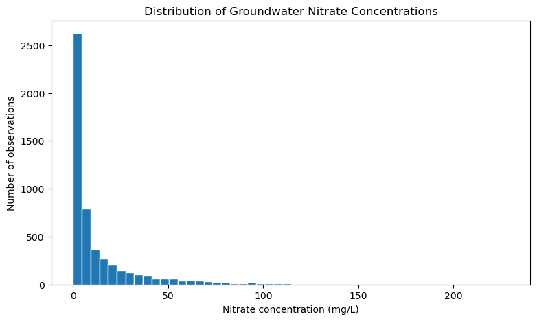
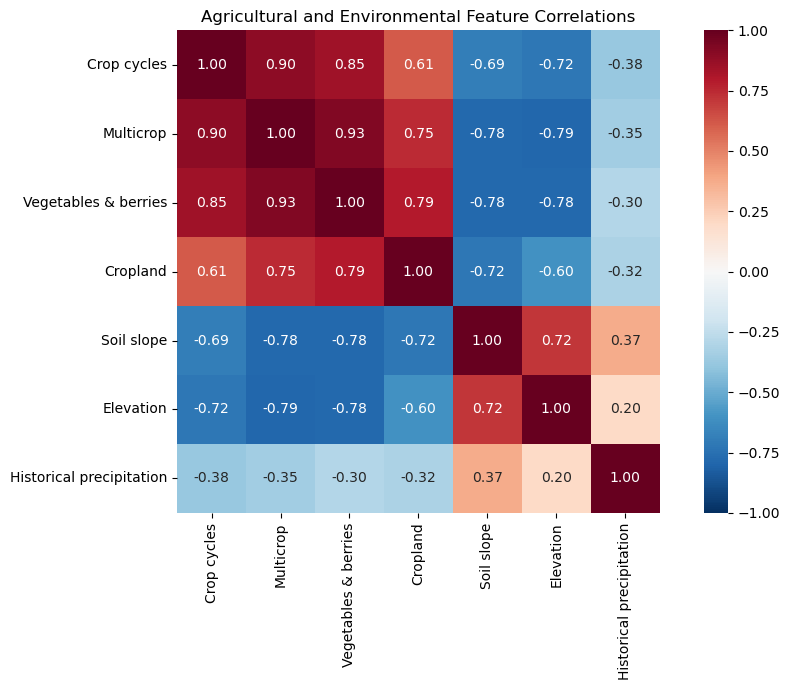

Dataset:groundwater_ml_integration_lag1_2021_2024_with_climate.csv (5,280 nitrate observations, 147 columns, 1,993 wells, as verified in the saved run) Study period: nitrate measurements 2022–2025; prior-year crop maps 2021–2024
Scope: Reorganized from previously completed EDA. No new analyses or models were run in this revision. Saved outputs are retained for review; archived 2023-only cells appear at the end and are disabled to avoid accidental execution with the newer schema.
Research Objective
Explore groundwater nitrate, environmental predictors, and historical agricultural features in the Salinas Valley. Descriptive and rank-based correlations are exploratory, not causal evidence or final ML feature selection.
1. Data Overview & Validation
1.1 Load and inspect the integrated dataset
Objective: Inspect the updated dataset and verify basic dimensions before reviewing saved EDA results.
Code
# Load the corrected integrated dataset without a user-specific absolute path.# Start JupyterLab anywhere inside the cloned repository.import pandas as pdimport sysfrom pathlib import Path# Make src importable from any notebook folder (identical in every notebook)sys.path.insert(0, str(next(p for p in [Path.cwd(), *Path.cwd().parents] if (p /"src").is_dir())))from src import pathsREPO_ROOT = paths.ROOTif REPO_ROOT isNone:raiseFileNotFoundError("Open JupyterLab from within the project repository.")data_path = ( paths.MODEL_DATA)ifnot data_path.is_file():raiseFileNotFoundError(f"Integrated CSV not found: {data_path}. ""Generated datasets are not necessarily included in a Git push; ""obtain the approved data copy or run the upstream integration first." )df = pd.read_csv(data_path, dtype={"gm_well_id": "string"})print("Rows, columns:", df.shape)print("Unique wells:", df["gm_well_id"].nunique())print("Climate available:", "historical_mean_annual_precip_mm"in df.columns)
Objective: Quantify missing values across the updated integrated dataset. The saved output is from the previously executed cell; no fresh audit is performed in this revision.
Objective: Quantify how many unique wells are represented in the dataset and how many observations come from repeated sampling.
Code
# Count unique wells and summarize repeated groundwater measurementsn_wells = df["gm_well_id"].nunique()obs_per_well = df["gm_well_id"].value_counts()print("Number of observations:", len(df))print("Number of unique wells:", n_wells)print("Average observations per well:", round(obs_per_well.mean(), 2))display(obs_per_well.describe())
Number of observations: 5280
Number of unique wells: 1993
Average observations per well: 2.65
count 1993.0
mean 2.649272
std 1.331922
min 1.0
25% 1.0
50% 3.0
75% 4.0
max 9.0
Name: count, dtype: double[pyarrow]
2.2 Repeated Sampling Within Years
Objective: Identify wells sampled multiple times within the same year and understand the temporal structure of repeated measurements.
Code
# Count how many samples each well has in each yearsamples_per_well_year = df.groupby(["gm_well_id", "year"]).size()# Count how many well-year groups have multiple samplesprint("Well-year groups with multiple samples:", (samples_per_well_year >1).sum())# Show the distribution of samples per well per yeardisplay(samples_per_well_year.value_counts().sort_index())
Objective: Compare repeated sampling patterns across well categories.
Code
# Count how many samples each well has in each year, keeping the well categorywell_year_counts = ( df.groupby(["gm_well_id", "gm_well_category", "year"]) .size() .reset_index(name="n_samples"))# Create a flag for repeated sampling within the same well-yearwell_year_counts["repeated_within_year"] = well_year_counts["n_samples"] >1# Summarize repeated sampling by well categoryrepeated_by_category = pd.crosstab( well_year_counts["gm_well_category"], well_year_counts["repeated_within_year"], margins=True)display(well_year_counts.head())display(repeated_by_category)
gm_well_id
gm_well_category
year
n_samples
repeated_within_year
0
AGL020000465-PRIMARY
Domestic
2022
1
False
1
AGL020000465-PRIMARY
Domestic
2023
1
False
2
AGL020000465-PRIMARY
Domestic
2024
1
False
3
AGL020000465-PRIMARY
Domestic
2025
1
False
4
AGL020000484-ROOS-HOMESTEAD
Domestic
2022
1
False
repeated_within_year
False
True
All
gm_well_category
Domestic
2318
31
2349
Irrigation / Industrial
2799
30
2829
All
5117
61
5178
3. Target Variable — Groundwater Nitrate
3.1 Distribution & Summary Statistics
Objective: Examine the distribution, central tendency, variability, and extreme values of groundwater nitrate concentrations.
Code
import matplotlib.pyplot as plt# Summarize nitrate concentrations across all observationsdisplay(df["nitrate_mg_L"].describe())# Visualize the distribution of nitrate concentrationsplt.figure(figsize=(9, 5))plt.hist(df["nitrate_mg_L"], bins=50, edgecolor="white")plt.xlabel("Nitrate concentration (mg/L)")plt.ylabel("Number of observations")plt.title("Distribution of Groundwater Nitrate Concentrations")plt.show()
count 5280.000000
mean 14.310553
std 22.709797
min 0.000000
25% 1.700000
50% 4.600000
75% 16.700000
max 229.000000
Name: nitrate_mg_L, dtype: float64

4. Environmental Predictors vs. Nitrate
4.1 Soil and terrain relationships
Objective: Review previously computed Spearman relationships using one median summary per well. The underlying groundwater, soil, and terrain data have not been reprocessed.
Code
# Select nitrate and key soil/terrain featuresfeatures = ["soil_slopegradwta","soil_aws0150wta","soil_brockdepmin","elevation_m","topographic_position"]# Summarize nitrate and environmental features by wellwell_data = df.groupby("gm_well_id")[ ["nitrate_mg_L"] + features].median()# Calculate Spearman correlations with nitratecorrelations = well_data[features].corrwith( well_data["nitrate_mg_L"], method="spearman")# Show correlations and available well countsresults = pd.DataFrame({"spearman_r": correlations.round(3),"n_wells": well_data[features].notna().sum()})display(results.sort_values("spearman_r", ascending=False))
spearman_r
n_wells
soil_aws0150wta
0.137
1993
topographic_position
0.069
1993
soil_brockdepmin
0.040
603
elevation_m
-0.253
1993
soil_slopegradwta
-0.361
1993
Preliminary findings — Soil & Terrain
Soil slope (ρ = -0.361) and elevation (ρ = -0.253) show the strongest associations with nitrate.
Lower slope and elevation are associated with higher nitrate concentrations.
These relationships may reflect agricultural land use and spatial patterns rather than direct causal effects.
Bedrock depth has limited coverage (603 wells).
ML implication: Retain soil and terrain predictors for further evaluation. Test whether their associations remain useful under spatially independent validation.
4.2 Climate relationships
Objective: Review associations with historical and antecedent PRISM climate features. Interpret these as exploratory associations, potentially confounded by spatial/seasonal patterns.
Code
# Select historical and antecedent climate predictorsclimate_features = ["historical_mean_annual_precip_mm","previous_3_complete_months_precip_mm","previous_12_complete_months_precip_mm","historical_mean_temperature_c","previous_3_complete_months_temperature_c","previous_12_complete_months_temperature_c"]# Summarize climate and nitrate by well for an initial spatial comparisonclimate_by_well = df.groupby("gm_well_id")[ ["nitrate_mg_L"] + climate_features].median()# Calculate Spearman correlations and data availabilityclimate_results = pd.DataFrame({"spearman_r": climate_by_well[climate_features].corrwith( climate_by_well["nitrate_mg_L"], method="spearman" ).round(3),"n_wells": climate_by_well[climate_features].notna().sum()})display(climate_results.sort_values("spearman_r"))
spearman_r
n_wells
historical_mean_annual_precip_mm
-0.418
1993
previous_12_complete_months_precip_mm
-0.173
1993
previous_3_complete_months_precip_mm
-0.098
1993
previous_12_complete_months_temperature_c
-0.029
1993
historical_mean_temperature_c
0.068
1993
previous_3_complete_months_temperature_c
0.265
1993
Preliminary findings — Climate
Historical annual precipitation shows the strongest negative association with nitrate (ρ = -0.418).
Previous 3-month temperature shows a positive association (ρ = 0.265).
Other antecedent climate variables show weaker associations.
ML implication: Climate variables may provide useful predictors, but associations could reflect spatial and seasonal confounding. These results summarize differences between wells, not within-well temporal responses. Feature redundancy and predictive value must be evaluated under spatial-temporal validation.
5. Historical Agricultural Features — Lag-1 EDA
Objective: Review the already-computed availability and Spearman correlations of agricultural predictors from the year before each nitrate observation.
Temporal assumption: Year t nitrate is joined to year t−1 crop features to represent preceding agricultural conditions and avoid using later-in-year land use; this is not evidence that nitrate travels through the aquifer in one year. Maps published after a sampling date also mean these results are retrospective, not necessarily deployable at that past date. Consider alternative lag periods only in future analysis.
Coverage caveat: A successfully matched crop record or non-missing variable is not proof of complete mapped land cover within a buffer. The DWR polygon footprint represents mapped polygons, not the entire landscape.
Code
# Select key agricultural predictors for the initial EDA.# Check feature availability separately for each nitrate sampling year.crop_features = ["pct_cropland_500m","pct_veg_berry_500m","crop_cycles_500m","pct_multicrop_1000m","delta_cropland_pp_500m"]# Confirm which columns are present in the new dataset.available_features = [col for col in crop_features if col in df.columns]print("Available features:", available_features)# Calculate the percentage of non-missing values by sampling year.crop_availability = ( df.groupby("year")[available_features] .apply(lambda group: group.notna().mean() *100) .round(1))display(crop_availability)# Verify the one-year lag between nitrate and crop data.display(pd.crosstab(df["year"], df["crop_year"]))
Available features: ['pct_cropland_500m', 'pct_veg_berry_500m', 'crop_cycles_500m', 'pct_multicrop_1000m', 'delta_cropland_pp_500m']
pct_cropland_500m
pct_veg_berry_500m
crop_cycles_500m
pct_multicrop_1000m
delta_cropland_pp_500m
year
2022
99.6
99.6
99.4
99.7
99.6
2023
99.4
99.4
99.2
99.6
99.3
2024
99.8
99.8
99.6
99.8
99.8
2025
99.8
99.8
99.4
99.8
99.7
crop_year
2021
2022
2023
2024
year
2022
1455
0
0
0
2023
0
1298
0
0
2024
0
0
1252
0
2025
0
0
0
1275
Key Findings — Historical Crop Availability
Annual agricultural predictors are available for more than 99% of nitrate observations in each sampling year (2022–2025).
All observations were successfully matched to the preceding crop-mapping year (lag-1).
Feature availability does not imply complete spatial mapping coverage.
The lag-1 approach supports retrospective analysis, but does not establish the actual groundwater nitrate transport time.
Code
# Summarize repeated nitrate samples within each well-year.# Compare agricultural predictors with nitrate separately by year.well_year = ( df.groupby(["gm_well_id", "year"], as_index=False)[ ["nitrate_mg_L", *available_features] ].median())# Calculate Spearman correlations for each nitrate sampling year.yearly_corr = pd.DataFrame({ year: group[available_features].corrwith( group["nitrate_mg_L"], method="spearman" )for year, group in well_year.groupby("year")})print("Unique well-year records:", len(well_year))print("\nWells per year:")display(well_year.groupby("year")["gm_well_id"].nunique())print("\nSpearman correlations with nitrate:")display(yearly_corr.round(3))
Crop cycles showed the strongest and most consistent positive correlation with groundwater nitrate (ρ = 0.350–0.390).
Multicrop area (ρ = 0.323–0.369) and vegetable/berry cultivation (ρ = 0.294–0.346) also showed consistent positive associations.
Total cropland had weaker but consistently positive correlations (ρ = 0.224–0.263).
Annual changes in cropland percentage showed weak and inconsistent correlations with nitrate.
Compared with the previous 2023-only agricultural analysis, the expanded dataset revealed stronger relationships. However, differences in spatial coverage and sample composition prevent attributing this improvement solely to temporal alignment.
ML Implication: Retain agricultural intensity and crop composition as candidate predictors. Evaluate their additional predictive value after accounting for geography, soil, and climate. Correlations do not establish causality or justify final feature selection.
6. Feature Relationships & Redundancy
Objective: Review the previously computed seven-feature Spearman heatmap, focusing on how agricultural intensity relates to other agriculture variables, slope, elevation, and historical precipitation.
Scope: Seven intentionally selected example features, not all 147 columns. Identifiers, target values, coverage metadata and other variables are excluded from this display, and no feature is removed based on correlation alone.
Code
# Compare agricultural and environmental predictors.# Use one median value per well-year to avoid overweighting repeated samples.import matplotlib.pyplot as pltimport seaborn as snsfeature_labels = {"crop_cycles_500m": "Crop cycles","pct_multicrop_1000m": "Multicrop","pct_veg_berry_500m": "Vegetables & berries","pct_cropland_500m": "Cropland","soil_slopegradwta": "Soil slope","elevation_m": "Elevation","historical_mean_annual_precip_mm": "Historical precipitation"}well_year_features = ( df.groupby(["gm_well_id", "year"])[list(feature_labels)] .median())# Calculate Spearman correlations between predictors.feature_corr = well_year_features.corr(method="spearman")plot_corr = feature_corr.rename( index=feature_labels, columns=feature_labels)plt.figure(figsize=(10, 7))sns.heatmap( plot_corr, annot=True, fmt=".2f", cmap="RdBu_r", center=0, vmin=-1, vmax=1, square=True)plt.title("Agricultural and Environmental Feature Correlations")plt.tight_layout()plt.show()

Key Findings — Agricultural and Environmental Redundancy (saved heatmap)
Crop cycles and multicrop area: ρ = +0.90.
Multicrop and vegetables/berries: ρ = +0.93.
Agricultural predictors are negatively correlated with soil slope (e.g., multicrop vs. slope ρ = −0.78) and elevation (multicrop vs. elevation ρ = −0.79).
Soil slope and elevation: ρ = +0.72.
These values are associations among predictors, not direct effects on nitrate. Their geographic structure could explain part of the agricultural–nitrate associations. Collinearity and contributions to predictive performance still require group-aware model validation; no variables are excluded here.
Code
# ARCHIVE ONLY — legacy 2023 crop-snapshot analysis.# Saved results are preserved; do not rerun on the lag-1 dataset.ifFalse:import seaborn as sns# Use shorter feature names to make the plot easier to read labels = {"soil_slopegradwta": "Soil slope","elevation_m": "Elevation","soil_aws0150wta": "Soil water storage","historical_mean_annual_precip_mm": "Historical precipitation","previous_3_complete_months_temperature_c": "3-month temperature","pct_cropland_500m_2023": "Cropland 500m","crop_cycles_500m_2023": "Crop cycles 500m","pct_multicrop_1000m_2023": "Multicrop 1000m" }# Rename columns and rows for visualization only plot_corr = feature_corr.rename(index=labels, columns=labels)# Visualize Spearman correlations between environmental predictors plt.figure(figsize=(10, 8)) sns.heatmap( plot_corr, annot=True, fmt=".2f", cmap="RdBu_r", center=0, vmin=-1, vmax=1, linewidths=0.5, square=True ) plt.title("Environmental Feature Correlations (Spearman)") plt.tight_layout() plt.show()
Key Findings — Feature Redundancy
Crop cycles and multicrop percentage are strongly correlated (ρ = 0.77), suggesting overlapping information about agricultural intensity.
Soil slope and elevation are also strongly correlated (ρ = 0.74), potentially reflecting the geography of Salinas Valley.
Cropland and multicrop percentage show moderate-to-strong correlation (ρ = 0.61).
Several environmental predictors appear to capture related spatial or agricultural characteristics.
ML Implication: Retain these features initially, but evaluate redundancy and their individual predictive contributions. Correlation alone is not sufficient justification for removing variables.